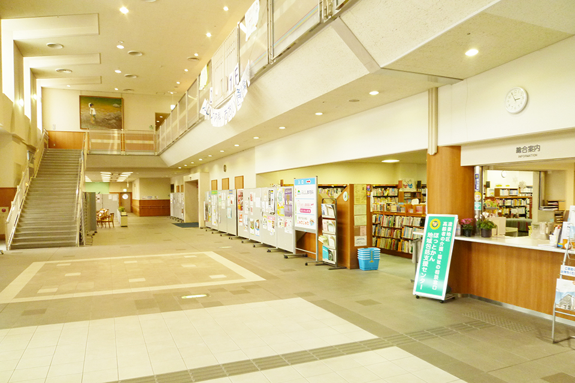
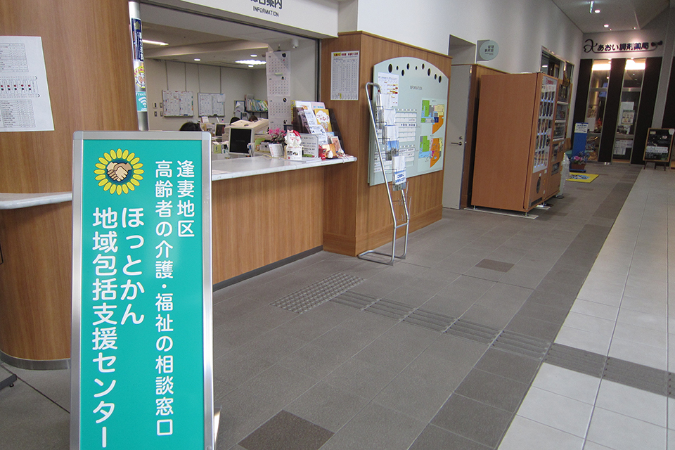
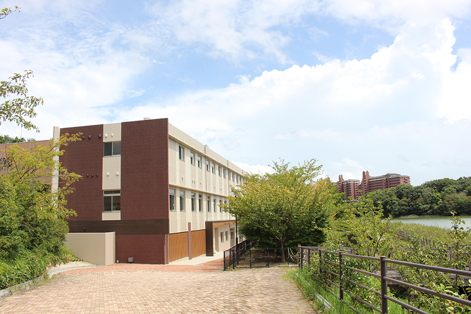

介護のご相談

地域包括支援センター
公的な地域の高齢者相談窓口です！
「地域包括支援センター」は豊田市から委託を受けた公的な地域の高齢者（65才以上）相談窓口です。
ほっとかん地域包括支援センターは、逢妻地区にお住まいの高齢者の皆様を対象とし、「いつまでも、住み慣れた町ですこやかに暮らしたい」そんな思いを大切に生活のお手伝いをします！
電話での相談はもちろん、家庭訪問も対応します。

例えば…
- 介護保険制度について知りたい。
- 認知症や寝たきりの不安がある。
- 介護予防をしたい。
などご相談を受け付けています。
相談は無料です。まずはお気軽にお電話ください！
| 受付時間 | 月〜土曜日 午前8時30分〜午後5時30分 |
|---|---|
| 受入れ可能地域 | 逢妻地区 |
地域包括支援センターへのご相談
株式会社豊田ほっとかん
〒471-0046 愛知県豊田市本新町7丁目48番地6
認知症カフェ
そよ風カフェにてみませんか？
そよ風カフェでは、認知症の方ご本人とご家族を中心に、どなたでも気軽にご参加いただけます。
認知症の方やそのご家族、地域のみなさんと一緒にお茶・お菓子を囲んでおしゃべりしませんか？
申し込みは不要です。お待ちいたしております。
| 時間 | 13:30〜15:00 |
|---|---|
| 料金 | 200円（お茶・お菓子代） |
| 場所 | 豊田ほっとかん 館内 |
お申込みは不要です、当日会場でお待ちしております。
認知症カフェのお問い合わせ
株式会社豊田ほっとかん
〒471-0046 愛知県豊田市本新町7丁目48番地6
居宅介護支援事業所
ケアマネジャーが介護認定を受けた方の
介護計画（ケアプラン）の作成をします。
ほっとかん居宅介護支援事業所は介護認定を受けたご利用者様、ご家族様の立場に立ち、寄り添いながら、介護が必要になっても自立をめざし楽しい老後を送るお手伝いをします。
2021年1月からみよし市の方の受入れを開始しました。

| 受付時間 | 月〜土曜日 午前8時30分〜午後5時30分 |
|---|---|
| 受入れ可能地域 | 豊田市、みよし市（詳細な対応範囲については直接お問い合わせください） |
居宅介護支援事業所へのご相談
株式会社豊田ほっとかん
〒471-0046 愛知県豊田市本新町7丁目48番地6
フォームでのお問い合わせ
お急ぎの方は、各窓口へお電話ください。